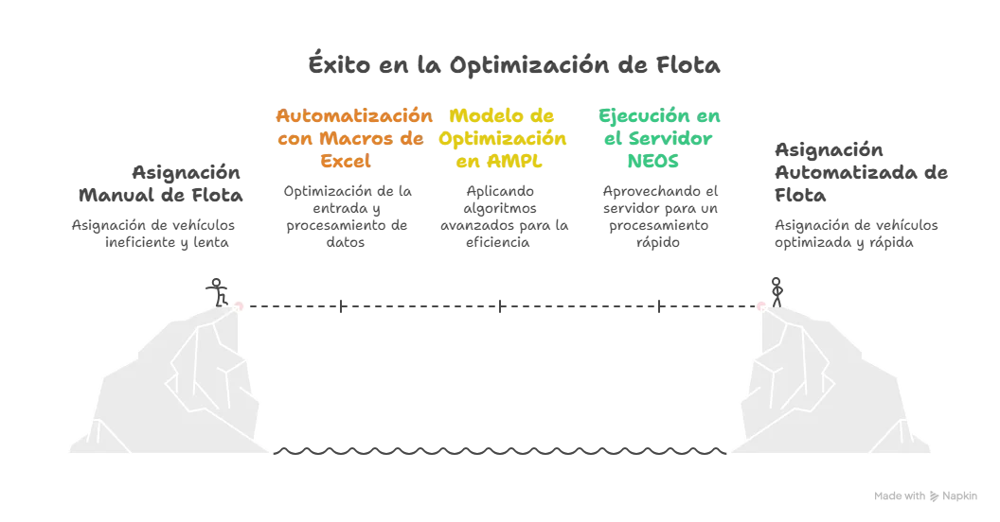
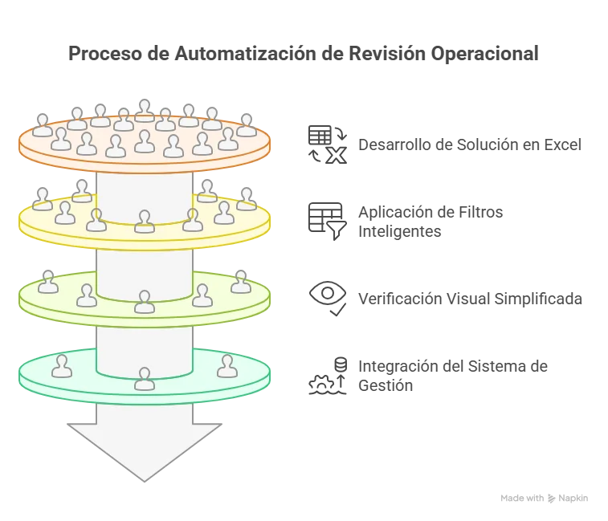
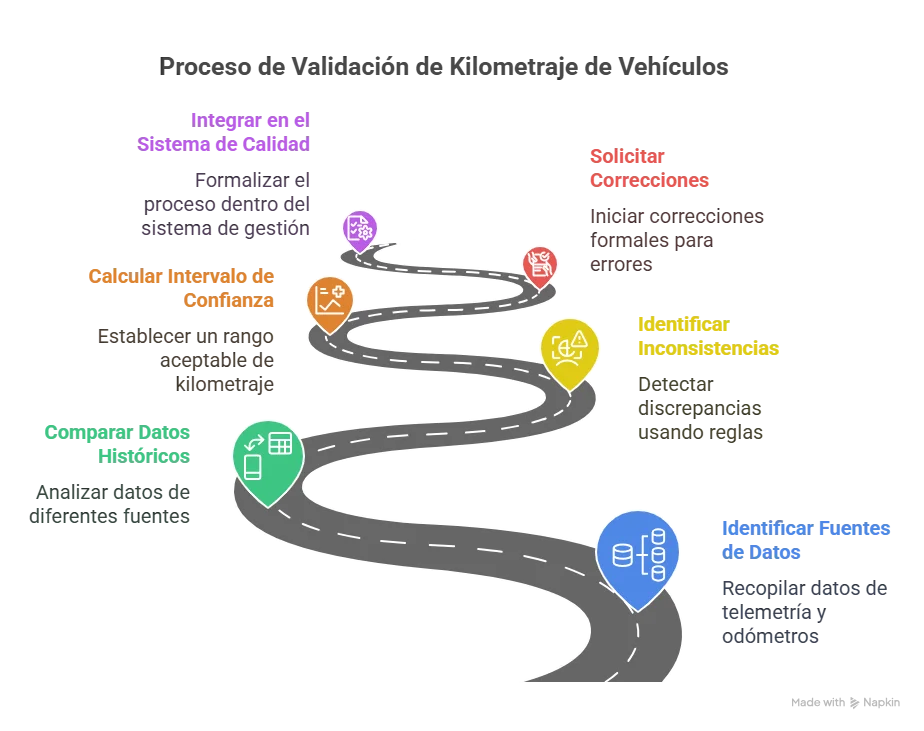

Casos de Éxito

🚛 Optimización Estratégica de Flota
Desafío: Asignación manual diaria de +100 vehículos, con errores y baja eficiencia.
- Macros en Excel + AMPL + NEOS Server
- Asignación en 5 min vs 60 min
- +15% eficiencia y trazabilidad
"Convertimos un cuello de botella en ventaja competitiva medible."
Solicita una solución similar

📝 Revisión Operacional Automatizada
Desafío: Validación manual entre fuentes digitales y físicas.
- Excel + Visual Basic con filtros y trazabilidad
- -50% tiempo de revisión
- Integración con SGI
"Una tarea crítica ahora es rápida, clara y confiable."
Automatiza tus revisiones🚦 Disponibilidad Vehicular en Tiempo Real
Desafío: Falta de visibilidad + presupuesto limitado.
- Dashboard operativo con Google Sheets
- Información clave para logística
- Sin costo de licencias
"Logramos resultados que antes solo ofrecían sistemas costosos."
Quiero una solución similar

📊 Seguimiento Confiable del Odómetro
Desafío: Inconsistencias entre odómetros y telemetría.
- Validación técnica y análisis por patrones
- Intervalos de confianza
- Cumplimiento contractual y soporte de calidad
"Transformamos incertidumbre en evidencia técnica."
Controla tu kilometraje